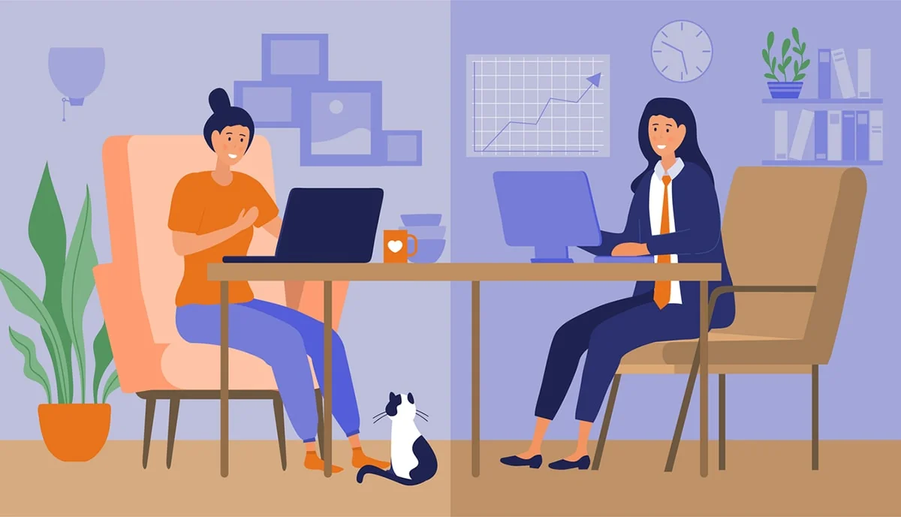
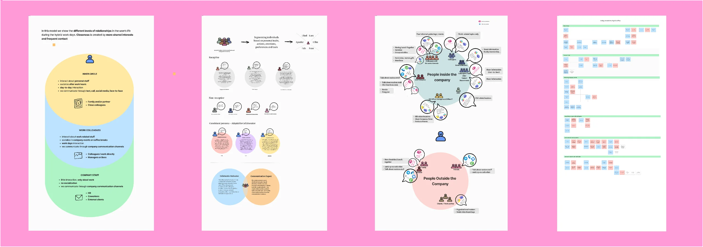
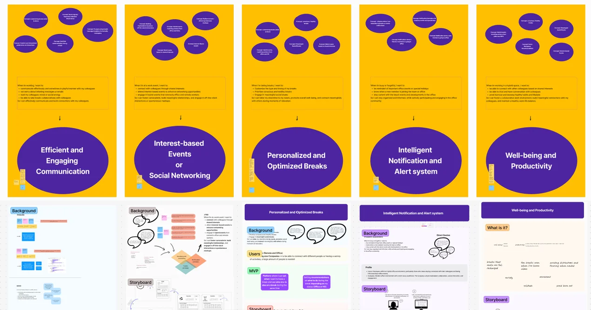
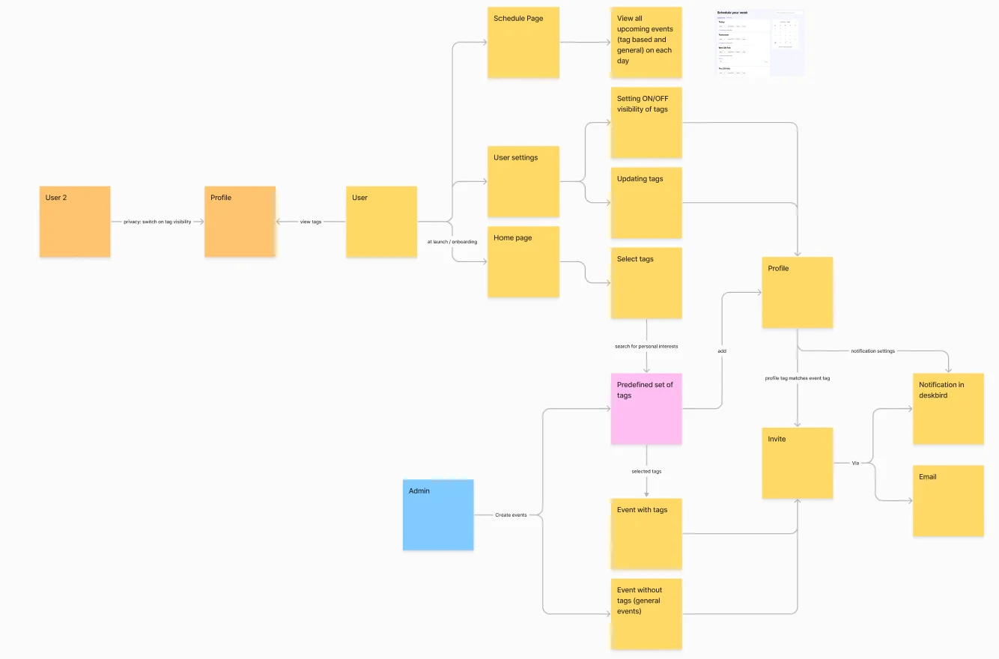
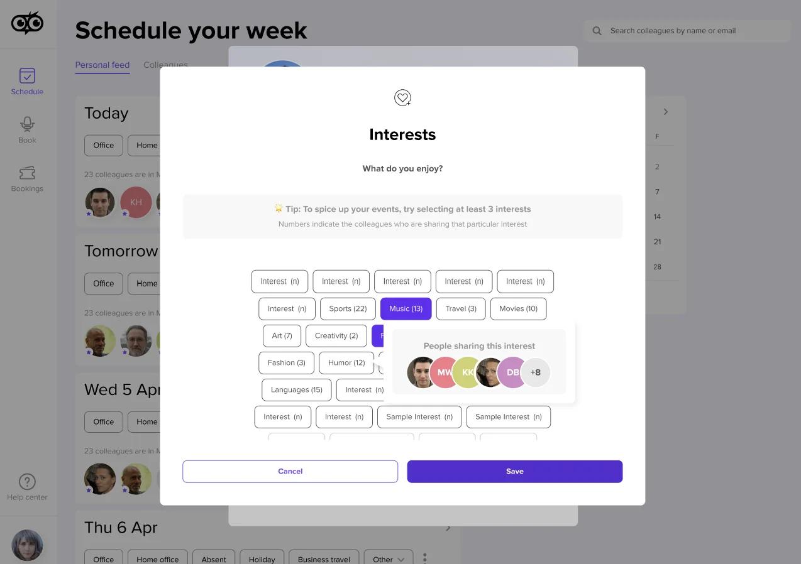
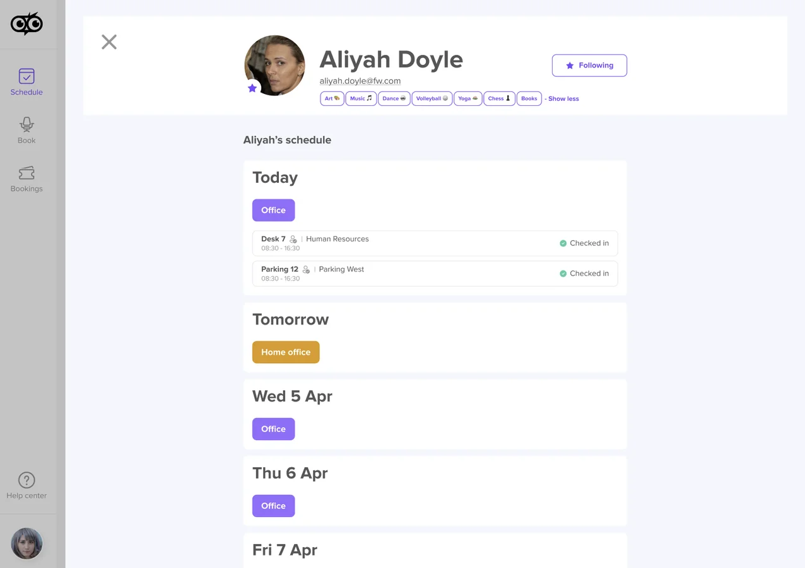

Case Study · Oct 2023 – Mar 2024
Improving Hybrid Office Interactions
A UX research and UI design project in collaboration with Deskbird and Bauhaus-Universität Weimar. This project focused on exploring what meaningful interactions are between hybrid office workers. Through user research, we identified opportunities and designed a high-fidelity interactive prototype for a new Deskbird feature.

01 - OVERVIEW
The Challenge
After the pandemic, Deskbird noticed a clear pattern: employees were choosing to work from home most of the time, leading to reduced office attendance. Hybrid work reduces spontaneous interactions between employees, in office or home office. The relationships between people outside immediate teams had almost disappeared. The goal of this project was to explore opportunities to improve meaningful interactions within the Deskbird platform and give the people a reason to want to come in.
No social motivation to come to the office - Lack of spontaneous interactions
In hybrid offices, the informal and spontaneous interactions that give people the sense of connection and foster a sense of community, are reduced due to the different schedules of each employee. Without a reason to coordinate or connect, home office was simply the easier choice.
Design a feature that makes the office worth coming to and support social interactions
We were asked to create a completely new feature for Deskbird customers that rebuilds cross-team connection and gives people a genuine social reason to be in the office.
02 - PROCESS
Steps Taken
- 1
Exploring scope, limitations and competitors
Evaluating existing solutions for interaction in hybrid workplaces
Quick scan of what similar tools were already offering in the market
- 2
User Studies
Online Survey (57 Participants) → to identify opinions and patterns
Remote Contextual Inquiry + Follow-up Interviews (6 Participants) → to understand real behaviors and motivations
- 3
Synthesis
Affinity Mapping to identify key insights and feature requirements
- 4
Ideation
Multiple concepts explored and discussed with stakeholders
- 5
UI Design
Creation of a high-fidelity prototype to show the functionality of the concept
03 - RESEARCH
Understanding why people were not socializing in the office
We started with a competitive analysis to understand the landscape, then ran a broad survey to identify the thoughts around socialization at work. To go deeper, we conducted remote contextual inquiry followed by interviews with 6 users (employees from different levels and managers) observing how they actually planned their work weeks and interacted with their workplace and coworkers.

“Small, but genuine interactions are important to me and have a positive impact”
Contextual Inquiry participant
Easier to interact in the office
Hybrid events are still needed to connect in office and remote workers
Breaks are when socialization happens
There is also a difference between breaks at the office vs at home office
They want variety and meaningful social breaks
Connecting through shared interests enhances networking opportunities
04 - DESIGN
Interest-based communities
After analysing and discussing with Deskbird stakeholders different possible concepts, we believed that interest-based communities and events would foster a real sense of community. Our concept gives the employees, no matter their hierarchy, the agency to create and customize events. The concept also allows hybrid workers to interact with other employees and bond over mutual interests.




05 - OUTCOMES
Results and Impact
The final prototype was presented to Deskbird, who responded positively to the community-based direction after an iterative concept review process
This was the first time I followed a UCD process and my first time with UI design. It taught me how inseparable UX research and UI design really are, every screen decision traced back to what we learned from participants. It also showed me how to stay grounded in research findings when stakeholders pull in different directions.
NEXT